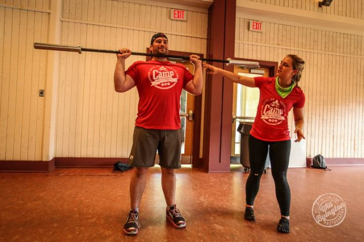

Workout Routines
"What shoul I do for a workout?"
After all, many people are interested in getting started with strength training and want to know what workout routine to follow.
Considering that a program should be developed around a person’s biology, age, goals, diet, free time, etc, there’s a lot of factors I can’t get in through email that would allow me to tailor a program specific to that person.
I can certainly offer up suggestions, but there’s one person that knows what’s best for you: YOU. And the best workout program is the one that you ACTUALLY follow!
Now, developing a workout routine for yourself can be scary, but it’s really not too difficult and kind of fun once you understand the basics.
First of all, let’s start with this question: what are you doing NOW for a workout?
Is it working?
Are you safe and is it making you healthier?
If so,keep doing it!
However, if you’re JUST getting started, you want to mix things up, or you’re ready to start lifting weights, it’s good to understand what goes into a program so you can build one for yourself.
If you ARE ready to start building your own routine and want to know how its done, great, let’s do this!
We’ve also created a free resource for folks who want to build their own workout but would love some more specific direction or want to make sure they’re not doing things incorrectly!
DETERMINE YOUR SITUATION
For starters,howmuch time can you devote to exercise?
If you can do an hour a day, that’s awesome. If you have a wife or husband, three kids, a dog, two jobs, and no robot butler, then maybe you only have thirty minutes every other day. That’s fine too.
Whatever your time commitment is, developing the most efficient workout is crucial. Why spend two hours in a gym when you can get just as much accomplished in 30 minutes? Right?
After all, we know that weight training is the fat-burning prize fight victor, and efficiency rules all.
Next,you'll want to determine WHERE you will workout:
Once you determine where you want to train, you can start to determine how much time you have to train, how to build your routine and more.
WHAT EXERCISE SHOULD I DO?

I like to follow the motto of "Keep it simple,stupid."
(Note: I am not calling you stupid. You’re reading Hardwired Fitness, which means you’re intelligent, good looking, really funny, but most of all, modest.)
The best workout is the one that you do, and people make things FAR too complicated and try to target a bazillion different individual muscles with six types of exercises for each body part and it’s exhausting, unnecessary, inefficient, and intimidating.
Keep it simple! We’re going to pick 5 exercises, and get really strong with those movements.
Unless you’ve been strength training for years and know what you’re doing, we recommend that you pick a full body routine that you can do two or three times a week.
You want a routine that has at least one exercise for your quads (front of your legs), butt and hamstrings (back of your legs), one exercise for your “push” muscles, one exercise for your “pull” muscles, and one exercise for your core.
Yes, this means you can develop a full body routine that uses only four or five exercises.
Hows THAT for efficiency!
Here is a quick breakdown on those movements:
- Quads – squats, lunges, one legged squats, box jumps.
- Butt and Hamstrings – hip raises, deadlifts, straight leg deadlifts, good mornings, step ups.
- Push (chest, shoulders, and triceps) – overhead press, bench press, incline dumbbell press, push ups, dips.
- Pull (back, biceps, and forearms) – chin ups, pull ups, bodyweight rows, dumbbell rows.
- Core (abs and lower back) – planks, side planks, exercise ball crunches, mountain climbers, jumping knee tucks, hanging leg raises.
Pick one exercise from each category above for a workout, and you’ll work almost every single muscle in your body. These are just a few examples for what you can do, but you really don’t need to make things more complicated than this.
We do have high-definition multi-camera demonstrations of each exercise above (over 100 HD videos) in our flagship course, The Nerd Fitness Academy. Here’s an example from the NF Academy, with Team NF’s Jim and Staci demonstrating a proper bodyweight push-up:
As stated above, when building your workout, don’t overthink things! Pick one exercise from EACH category above, specifically ones that scare you the least, and that will be your workout every other day for the next week.
Once you get confident in those movements,feel free to add some variety:
If you do the same routine, three days a week, for months and months you and your muscles might get bored. So feel free to stick with the above ‘formula,’ but change the ingredients:
If you do bench presses on Monday, go with shoulder presses on Wednesday and dips on Friday.
Squats on Monday? Try lunges on Wednesday and box jumps on Friday.
Pick a different exercise each time and your muscles will stay excited, you’ll stay excited, and you’ll actually DO the workout!
Lastly, your muscles don’t get built in the gym, they actually get broken down in the gym, and then get rebuilt stronger when you’re resting.
Give your muscles 48 hours to recover between workouts. A Monday-Wednesday-Friday workout works well to ensure enough time to recover, especially when you are just getting started. I stuck with a Monday-Wednesday-Friday full day routine for nearly 10 years and just focused on getting stronger with each movement.
I realize all of this can be overwhelming, especially if you’re trying to learn Strength Training AND build your own workout too. So we created a free resource that gives you some starter workouts (both bodyweight and weight training) that gives you the confidence to start today.
HOW MANY SETS SHOULD I DO?
Not including a warm-up set or two, I recommend doing between 3-5 sets per exercise.
A “set” is a series of repetitions that you complete without stopping. For example, if you drop down and do 10 push-ups right now, you just did 1 SET of 10 REPETITIONS (or REPS) of push-ups.
Got it?Cool.
Again, do not overthink this. Do not freak yourself out by worrying if you should do 4 sets or 5 sets. Pick one, record how you do with it, and get stronger the next time you do that movement.
So, try to keep your TOTAL (all exercises combined) workout number of sets for all exercises is in the 15-25 set range (5 exercises total, each with 4 “work sets” is a good start).
Remember, the most important part is to get started – you’ll learn how your body responds and you can adapt as you go.
What you DON’T need to do: multiple exercises for each body part with 10 sets. Unless you are a bodybuilder or an advanced athlete following a specific protocol prescribed to you by a coach, you can stick with 4-5 sets for each of the 5 exercises in your workout routine and get outta the gym (or finish your home workout) sooner.
HOW MANY REPETITIONS SHOULD I DO?
This is another thing that many people overthink.
If you are new to exercising or strength training, you’ll want to aim for higher reps per set with lighter weights as you’re learning the movements (if you’re training with weight). As you get stronger and start to learn about how you like to train, you might switch to a lower rep range, even up to a single rep of maximum effort (on a movement like a Squat or Deadlift).
Some general rules:
If you’re looking to burn fat while building muscle, keep your number of repetitions per set in the 8-15 range per set. If you can do more than 15 reps without much of a challenge, increase the weight or the difficulty of the movement. This is true for things like lunges, bodyweight squats, push-ups, pull-ups, etc.
There are some generally accepted ‘rules’ about how to determine how many reps you should target per set, based on your goals.
What’s the significance of the different number of repetitions? These are some ROUGHT guidelines, but definitely remember that how you eat will determine if you get bigger or stronger:
- Reps in the 1-5 range build super dense muscle and strength (called myofibrillar hypertrophy).
- Reps in the 6-12 range build a somewhat equal amounts of muscular strength and muscular size (this is called sarcoplasmic hypertrophy).
- Reps in the 12+ range build muscular endurance.
If you’re looking for a simple answer: do 4 sets of 8-10 reps for each movement you’ve chosen, and see how your body responds. But don’t neglect your diet! That’s 90% of the battle!
HOW LONG SHOULD I WAIT BETWEEN SETS?
Keep it simple,you smart,good looking and modest person.
Below is a basic formula for you to determine how long you should wait between sets, but this can be adjusted based on your level of health. The goal is to wait the least amount of time you need, but still rest enough that you can perform all reps of the next set safely and properly!
Here are some guidelines(not rules set in stone!):
- 1-3 Reps (lifting heavy for strength/power): Rest for 3 to 5 minutes
- 4-7 Reps (lifting for strength): Rest for 2 to 3 minutes
- 8-12 Reps (lifting for size/strength): Rest for 1 to 2 minutes
- 13 Reps+ (lifting for endurance): Rest for 1 minute or less
If you need more or less rest than the above recommendations, that’s more than okay. Do the best you can, record how long it takes you to rest between sets, and try to rest for shorter periods in the future. Your body will adjust as you get stronger and healthier!
Do not overthink this!
HOW MUCH WEIGHT SHOULD I LIFT?
This one is easy: lift enough so that you can get through the set, but not too much that you have NO fuel left in the tank at the end.
How do you determine how much that is? Trial and error. But ALWAYS err on the side of “too light” versus “too heavy” when starting out. It’s better to say “I bet I could have done more!” instead of “that was too much, and now I need to go to the hospital!”
If you’re doing exercises with just your body weight, you need to find a way to make each exercise more difficult as you get in shape – once you get past 20 reps for a particular exercise and you’re not gassed, it’s time to mix things up.
- Can you do 20 push ups no problem? It’s time to start mixing them up to be more challenging. Pick a variation from this article and make yourself work for it!
- 20 bodyweight squats too easy? Hold some weights high above your head as you do the next set. Try one-squats. Always be challenging yourself.
HOW LONG SHOULD I EXERCISE?
Easy answer: 45 minutes to an hour.
If you’re doing 15-25 sets of total exercise, you should be able to get everything done within that 45 minute block. Now, factor in a five or ten minute warm-up, and then stretching afterwards, and the workout can go a little bit longer.
If you can go for over an hour and you’re not completely worn out, you’re simply not pushing yourself hard enough.
Less time, more intensity, better results.
What if you don’t have 45 minutes? Maybe you want to build some cardio into your weight training. That’s where these next two sections come in.
ALTERNATE SETS
Let’s say you’re doing four sets of squats and you plan on doing four sets of dumbbell bench presses after that. If you wait two minutes between each set, this will take you around twenty minutes or so (factoring in the time to get set and actually do the set).
Try this instead: Do a set of squats, wait one minute, then do a set of dumbbell presses, wait one minute, then do your next set of squats, and so on.
Because you’re exercising two completely different muscle groups, you can exercise one while the other is “resting.” You’re now getting the same workout done in half the time. Also, because you’re resting less, your body has to work harder so your heart is getting a workout too.Jackpot.
Let's see how this would play out in a sample workout:
- Lunges alternating with incline dumbbell presses, four sets each, one minute between sets.
- Wait a few minutes to catch your breath and get set for your next two exercises.
- Straight leg deadlifts alternating with wide-grip pull ups, four sets each, one minute between sets.
- 3 Sets of planks, stretch, and get the hell out of there!
CIRCUITS
This is the most effective way to burn fat when exercising
This is also the most effective way to make you involuntarily swear at inanimate objects.
A circuit requires you to do one set for EVERY exercise, one after the other, without stopping. After you’ve done one set of each exercise in succession, you then repeat the process two, or three, or four more times.
Note: If you work out in a gym, Circuits get very tricky when in a gym, so make sure you’re doing them when it’s not crowded.
Training in a gym, or afraid to even attempt one? I hear ya. Gyms are intimidating and oftentimes full of jerks. So we created a gym survival chapter in the Strength 101 Ebook. If you couldn’t tell already, I’m really proud of this thing (ha!), and I think it can help you get started with strength training and leveling up your “build a workout” skill too.
RECAP:BUILDING A WORKOUT ROUTINE

Lets break it down into easy chunks right here:
- ALWAYS warm up – 5-10 minutes on a bike, rowing machine, jumping jacks, run up and down your stairs, etc. Get the blood flowing and your muscles warm.
- Pick one exercise for each big muscle group – quads, butt and hamstrings, push, pull, and core.
- Do 3-5 sets for each exercise.
- Determine how many reps and how long you’ll wait between sets for each exercise.
- Mix it up! Vary your reps, sets, and exercises. Keep it interesting.
- Increase your efficiency and work your heart by doing alternating sets or circuits.
- Keep your workout to under and hour.
- Stretch AFTER your workout.
- Write everything down!
- Give yourself permission to mess up, keep learning and improving it as you train more regularly!
I certainly encourage you to try and build your own workout routine though, it can really help you develop a sense of excitement and pride when you start to get in shape based on your workout!